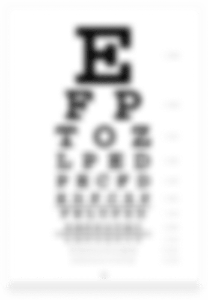
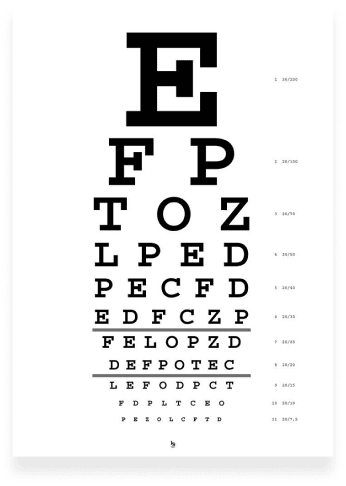
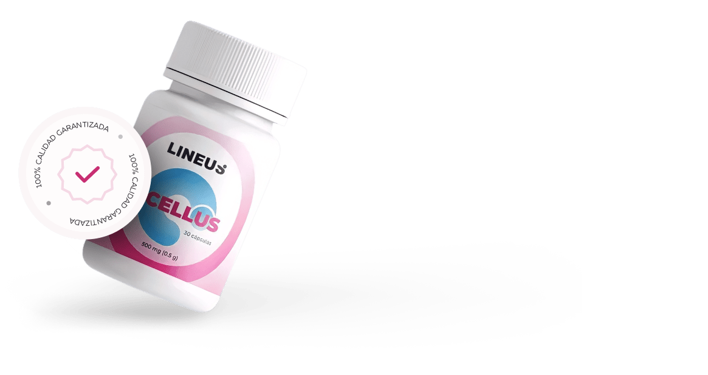

¿SU VISIÓN EMPEORA
CADA DÍA?
Lo principal para tener una visión normal es una buena elasticidad del cristalino. Desafortunadamente, esta cualidad disminuye bajo la influencia de múltiples factores:
- Edad
- Demasiada tensión en los ojos
- Diversos procesos patológicos (a menudo inflamatorios)
- Insuficiente suministro de sangre
- Miastenia grave y debilidad muscular
¡LA CAUSA PRINCIPAL DE LA BAJA
VISIÓN ES EL MAL FUNCIONAMIENTO
DE LOS MÚSCULOS DE LOS OJOS!
-
El sistema muscular enfoca los ojos de tal manera que la imagen
que pasa a través del cristalino se proyecta en la retina. -
Los trastornos del músculo ocular dan como resultado una
compactación insuficiente o excesiva del globo ocular. -
El cristalino está deformado y el foco está distorsionado, por lo
que ya no puede ver con claridad.
LAS LENTES Y LENTES DE CONTACTO
NO PODRÁN
AYUDARLE
Relajan los músculos del ojo, lo que conduce a su deformación y solo exacerba el problema.
OCELLUS
ES UN PRODUCTO INNOVADOR PARA
RESTAURAR LA VISIÓN
Ocellus es un tipo de nutriente extraído de forma natural que tiene un efecto directo en la visión reducida y trata por completo las enfermedades más comunes del ojo humano.
Es el único producto que regula la función de los músculos del globo ocular, ayuda a restablecer el enfoque y a obtener una visión clara, brillante y tridimensional.
Luteína
protege la retina de diversas influencias externas.
Zeaxantina
ayuda a mantener sanos los músculos del ojo y reduce la fatiga.
Vitaminas
mejoran la claridad de los ojos.
Minerales
fortalecen los capilares y las venas oculares.
El resultado de usar
OCELLUS
Antes

El resultado de usar
OCELLUS
Después
NUEVA TECNOLOGÍA:
SOPORTE MUSCULAR DE LOS OJO
Los músculos se fortalecen y dejan de deformar el globo ocular
-
1
Alivia la inflamación, la tensión, la sequedad y la irritación,
-
2
Mejora la agudeza visual, fortalece la retina del ojo,
-
3
Estimula las sinapsis nerviosasque proporcionan una visión
clara, -
4
Mejora la capacidad de r espuesta de los músculosal estrés,
reduce y previene la hipertonicidad, -
5
Asegura el correctoenfoque del cristalino,
-
6
Fortalece la circulación sanguíneacapilar,
-
7
Elimina el riesgo de desarrollarenfermedades oculares
peligrosas, -
8
Normaliza la presión arterialen el fondo del ojo.
¿CUÁNDO NECESITA OCELLUS?
Visión baja y borrosa
Diversas enfermedades y patologías del aparato visual
Sensación frecuente de ardor, arenilla y enrojecimiento de los ojos
Si lleva lentes o lentes de contacto
Visión baja y borrosa
Diversas enfermedades y patologías del aparato visual
Sensación frecuente de ardor, arenilla y enrojecimiento de los ojos
¿QUÉ MUESTRAN
LOS ESTUDIOS?
Este producto fue probado por los centros de investigación y hospitales más importantes de Rusia, Alemania e Israel.
Todos ellos estuvieron tomando una cápsula de Ocellus cada día durante 31 días
Ojos rojos, con picazón y dolor
Recuperación de la visión después del
glaucoma y de las cataratas de nivel 1-2
No más ojos cansados después de trabajar
frente a la pantalla durante 8 horas o más
Recuperación tras una queratitis corneal
Reducción del desprendimiento de la retina
OPINIÓN EXPERTA
En los últimos años, la cantidad de personas con pérdida de visión ha aumentado 18 veces. Muchos de mis pacientes están en pánico y me piden que les recete lentes y lentes de contacto, aunque no entienden que dicha medida empeora aún más la situación, afectando negativamente al ojo humano.
Actualmente, es posible resolver el problema con otros productos. Para ello, se creó Ocellus. Se lo recomiendo a todos mis pacientes y, en el 99% de los casos, pueden volver a disfrutar de una visión clara y brillante después de 1 solo ciclo de tratamiento.
Este producto contiene una combinación única de ingredientes que restauran el funcionamiento de los músculos del ojo y mejoran la condición del cristalino, que son los principales factores de una buena visión.
Combinado con ejercicios oculares, este tratamiento proporciona resultados seguros en el menor tiempo posible y ayuda a evitar la intervención quirúrgica.
ELLOS YA HAN RESTAURADO
SU VISIÓN CON LA AYUDA
DE OCELLUS
¡CUIDADO CON LAS IMITACIONES DE
OCELLUS!
Para evitar los productos falsos y de imitación de baja calidad, solo compre el producto original en este sitio web.
¿LISTO PARA ORDENAR
OCELLUS!
Complete el formulario de orden más abajo.
Espere la llamada de nuestro operador para confirmar la orden.
¡Trabajamos sin pago anticipado! usted paga su orden solamente cuando la recibe.
Si lo ordena ahora,
Podrá llevarse un
increíble de descuento
130 PEN
260PEN